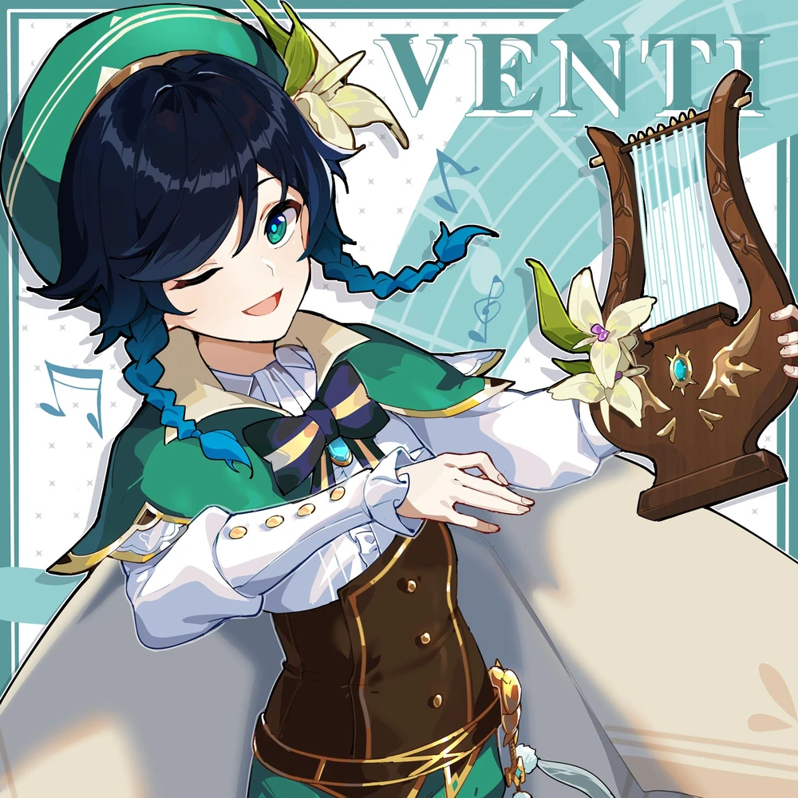

Венти
Неведомые ветра привели барда в наши земли.
Порой его песни стары как свет, а иной раз он играет современные произведения.
Любит яблоки и живую атмосферу, не любит сыры и всё липкое.
Когда он управляет ветрами, его Анемо сила проявляется в виде перьев.
Венти привлекает их лёгкость и беспечность.